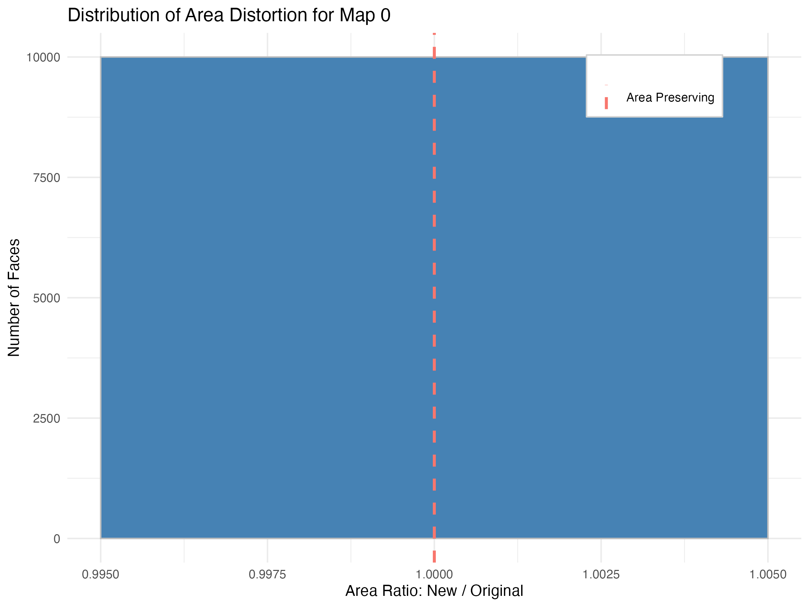

Quantifying Geometric Change in an Isotopy
Isotopy
Here we view an isotopy; a continuous deformation through time \(f_t: T^2 \to T^2\), where each step is a homeomorphism. The topology remains the same but the geometry changes. One aspect of this change is the metric distortion — how much the surface area of small neighborhoods stretches or shrinks during the transformation. This is indicated by the color of the faces in the 3D model, where blue indicates shrinking and red indicates stretching. The histogram on the right quantifies this distortion across all faces, showing the distribution of area change.
Slide to evolve Homeomorphism: 0
Geometric Distortion
The histogram below represents the distribution of area change across all faces. An area-preserving map would result in a single spike at 1.0.

Summary Statistics of the Mapping
Min Ratio
1.000
Mean Ratio
1.000
Max Ratio
1.000